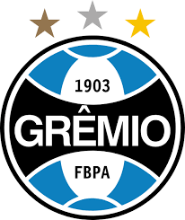

O Grêmio Foot-Ball Porto Alegrense foi fundado em 15 de setembro de 1903, na cidade de Porto Alegre. Desde sua criação, tornou-se um dos clubes mais tradicionais e vitoriosos do futebol brasileiro. Conhecido como “Imortal Tricolor”, o Grêmio conquistou importantes títulos nacionais e internacionais ao longo de sua história. Em 1981, venceu seu primeiro Campeonato Brasileiro. Dois anos depois, em 1983, conquistou sua primeira Copa Libertadores da América e o Mundial Interclubes, alcançando projeção internacional. Em 1995, ganhou sua segunda Libertadores e, em 1996, a Recopa Sul-Americana. O clube também se destacou na Copa do Brasil, tornando-se um dos maiores campeões da competição. Em 2012, inaugurou a Arena do Grêmio, sua atual casa. Em 2016, conquistou mais uma Copa do Brasil e, em 2017, levantou sua terceira Libertadores. Com uma torcida apaixonada e uma trajetória marcada por grandes conquistas, o Grêmio segue como um dos principais clubes do Brasil e da América do Sul.
